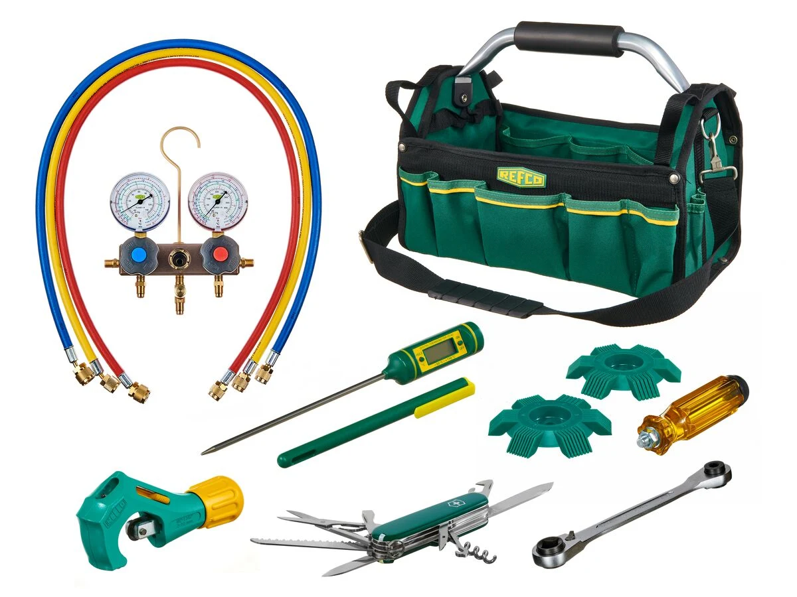

INKOM / RASHLADNI MATERIJAL
Detalji koji povezuju
rashladni sistem.
Materijal, pribor i oprema za rashladnu tehniku.
Istražite kategorijuPREGLED / RASHLADNI MATERIJAL
Kompatibilnost je prvi korak.
Za pravilan izbor materijala i pribora potrebni su podaci o uređaju, rashladnom sredstvu, radnim uslovima i priključcima sistema.
01 / RASHLADNI SISTEM
Rashladni sistem
- Oznaka uređaja
- Rashladno sredstvo
- Radni uslovi
02 / MATERIJAL I PRIBOR
Materijal i pribor
- Merenje
- Servis
- Povezivanje
03 / PRIPREMA
Podaci za upit
- Potreban deo
- Dimenzije
- Vrsta priključka
- Radni pritisak